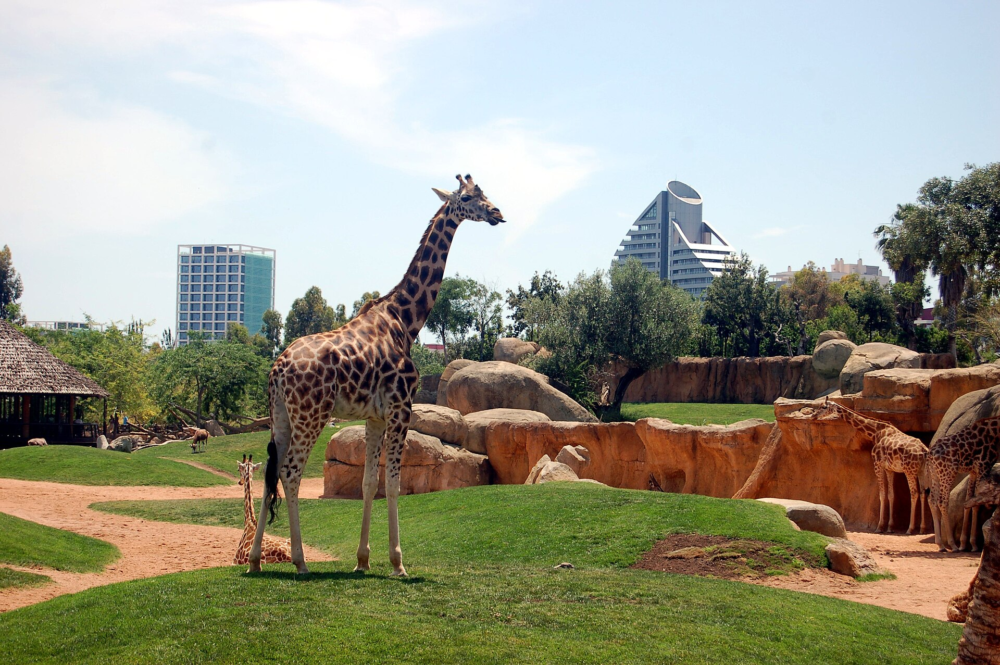
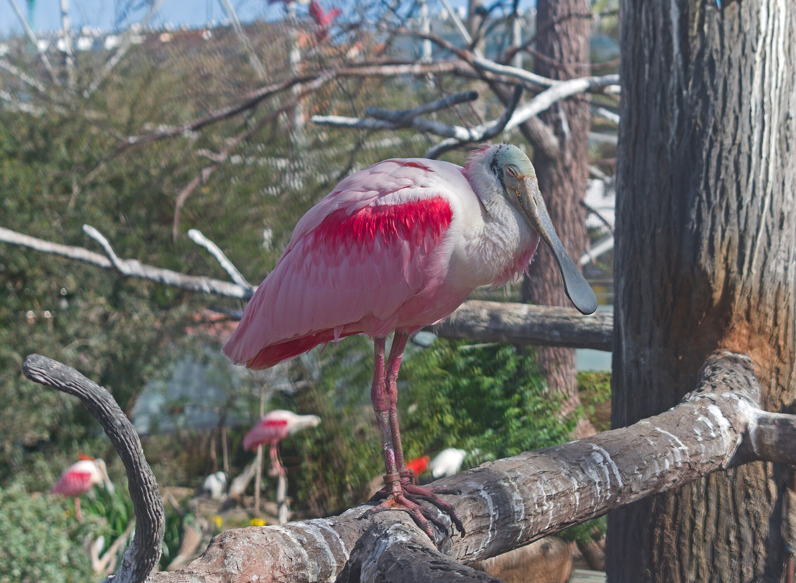
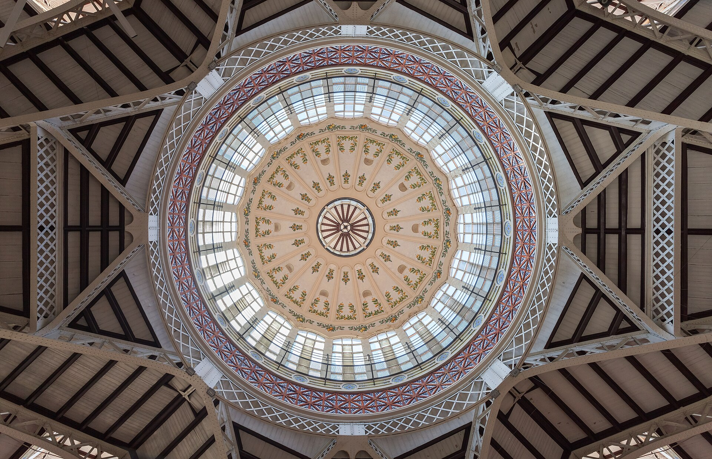
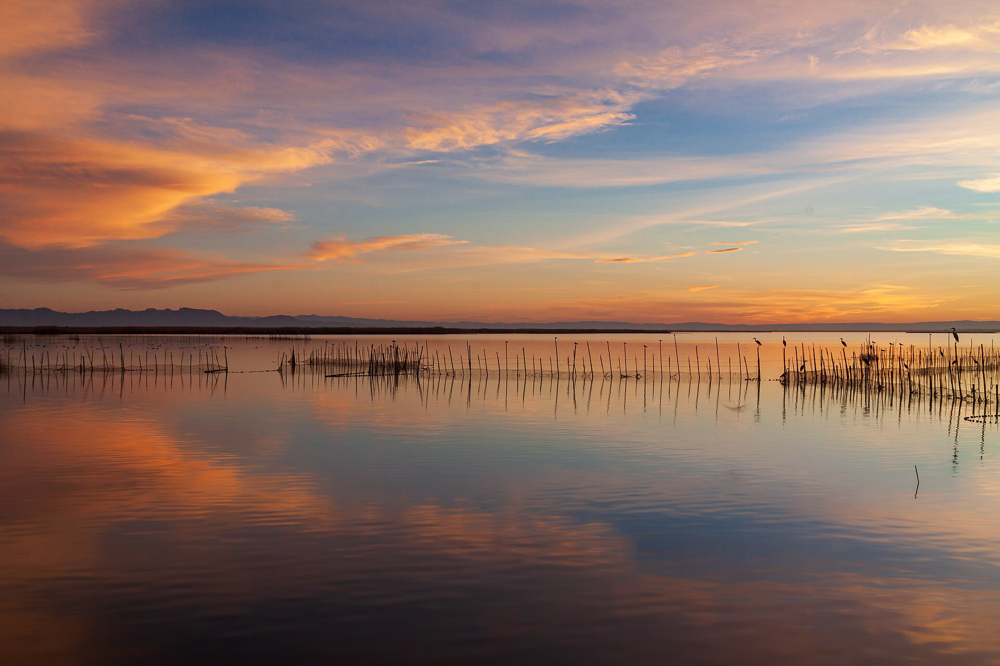

Bioparc Valencia : l'Afrique à 15 minutes de chez nous
Un concept unique de zoo-immersion sans barrière visible où girafes, lions, gorilles et hippopotames évoluent dans des paysages africains fidèlement reconstitués.
Chaque dimanche, nous partageons une idée de sortie testée et documentée en famille à Valencia et ses alentours. Adresses précises, horaires, tarifs détaillés et accès en transports : tout pour y aller les yeux fermés !

Un concept unique de zoo-immersion sans barrière visible où girafes, lions, gorilles et hippopotames évoluent dans des paysages africains fidèlement reconstitués.

Plus de 45 000 animaux marins, un tunnel immersif au milieu des requins, des bélougas majestueux et des réductions substantielles pour les familles nombreuses.

Le temple gourmand de Valencia sous une cathédrale moderniste de 1928 : produits frais du terroir, jambon ibérique découpé minute et tapas du chef Ricard Camarena.

Une croisière paisible en barque électrique au milieu des rizières et des oiseaux du parc naturel, à conclure par une authentique paella dans le village d'El Palmar.
Toutes les semaines, nous explorons un nouveau lieu à Valencia ou dans la région, avec nos 3 enfants. Retours d'expérience sans concession, bons plans billetterie et astuces d'accès pour profiter au maximum.
Ne manquez aucune idée de week-end en vous abonnant directement à notre flux RSS.